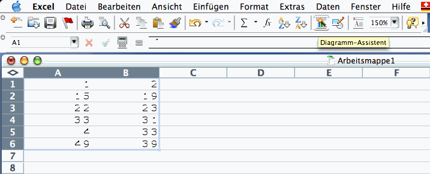
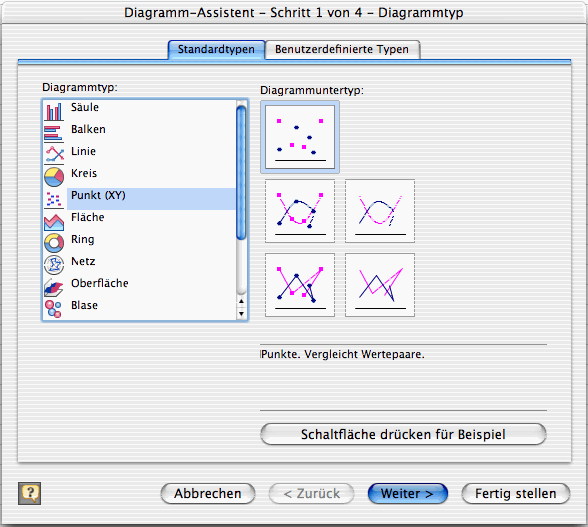
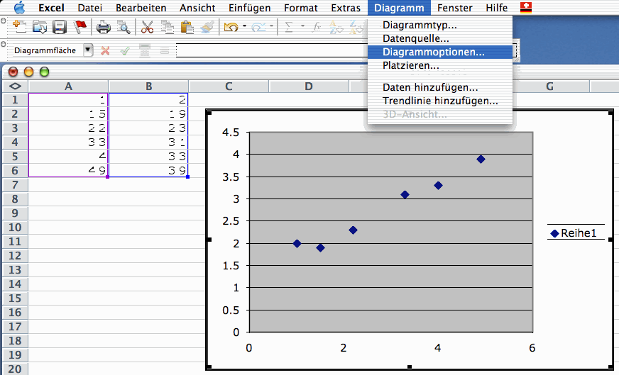
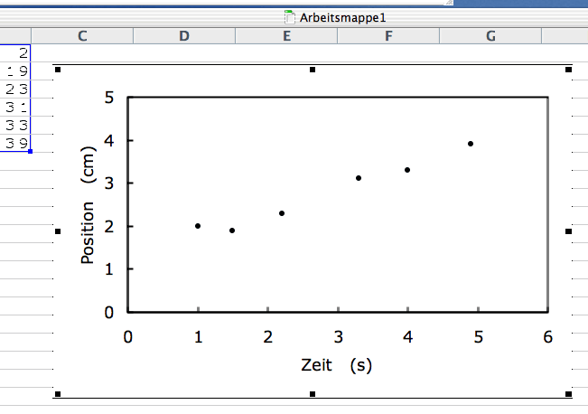

Diagramme mit Excel erstellen
Wie stellt man Messwerte mit Microsoft Excel graphisch dar?
Geben Sie die Messwerte als Spalten ein. Markieren Sie die Werte in den Spalten. Starten sie den Diagramm-Assistenten aus der Toolbar oder aus dem Menu "Einfügen" - "Diagramm...".
Screenshot:

Abb. 1: Markierung der Daten und Start des Diagramm-Assistenten
Wählen sie den "Punkt (XY)" - Diagrammtyp aus (Punkte nicht verbinden). Klicken Sie nachher auf "fertig stellen" oder lassen Sie sich vom Assistenten führen. Zusätzliche Daten können später noch eingefügt werden.
Screenshot:

Abb. 2: Auswahl des Diagramm-Typs im Diagramm-Assistenten
Das Diagramm wird mit der Standard-Formatierung in das Tabellenblatt eingesetzt. Markieren Sie das Diagramm (draufklicken). Wählen sie aus dem Menupunkt "Diagramm" die Diagrammoptionen aus oder klicken Sie auf die entsprechenden Elemente im Diagramm (Achsen, Titel, Marken, Rahmen, Digramm- und Hintergrundfläche, etc.). Verändern Sie die Formatierung nach Ihren Bedürfnissen.
Screenshot:

Abb. 3: Diagrammoptionen bei markiertem Diagramm anwählen
Das fertige Diagramm sollte weissen Hintergrund, keine Gitternetzlinien (entweder keine oder vertikale und horizontale), normale Achsenbeschriftungen, keinen äusseren Rahmen, keine Legende, etc. haben
Screenshot:

Abb. 4: Fertig formatiertes Diagramm
Das Diagramm kann anschliessend mit Copy-and-Paste in ein Word-Dokument eingesetzt werden. Dort versieht man es mit einer ausführlichen Beschreibung. Die Exportmöglichkeiten von Excel sind mager. Im Notfall druckt man das Diagramm separat aus und fügt das Blatt in den Bericht ein.
Excel kann auch Regressionsfunktionen (Fits) berechnen und im gleichen Diagramm darstellen. Der entsprechende Befehl lautet "Trendlinie einfügen"; Sie finden Ihn, wenn Sie das Diagramm anklicken und dann im Menu "Diagramm" nach unten scrollen.
29. September 2007 / Martin Lieberherr
Zum Seitenanfang